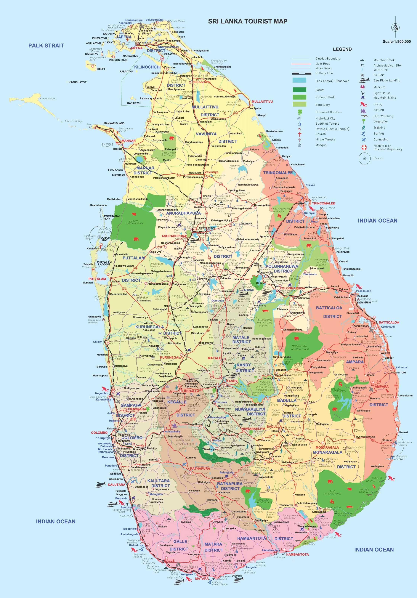

Sri Lanka
Sri Lanka is a tropical island nation that lies in the Indian Ocean. It has a history that dates back to the ancient Buddha. It is a place where the priginal spiriy of Buddhism still lingers, and where the beauty of nature remains untouched. Sri Lanka ia one of the few places in the worls that can offer the traveller a truly unique blend of both natural beauty and cultural heritage.
In just over 65,610 kilometers of island, Sri Lanka has 8 UNESCO World Heritage Sites. There are also over 1500 kilometers of coastline, and 15 national parks that are home to various wildlife species. There are also over 500,000 acres of tea plantations, as well as 250 acres of botanical gardens and 350 waterfalls.
This island nation is known for its magical proportions. It was once called the Pearl of the Indian Ocean, as well as the "Serendib of the Indian Ocean".
All you need to know when travelling to Sri Lanka

Welcome to Sri Lanka, where we hope to see you soon. We've been working hard to ensure that your trip to the island is as safe and secure as possible. In addition to the usual precautions, we've also taken the necessary steps to make sure that you'll have a great time. Before you leave for Sri Lanka, we want to make sure that you're aware of the vvarious things that you need to know to keep in mind to make your trip as enjoyable as possible.
Before you start planning to visit Sri Lanka, you need to note the following
- Fully Vaccinated travellers are exempted from pre-departure & on-arrival COVID-19 PCR/Rapid Antigen tests.
- No restrictive quarantine required.
- Not-Vaccinated & Not-fully Vaccinated Travellers are released from on-arrival PCR test & Quarantine period
- Visitors can apply for online visa through eta.gov.lk
- No minimum number of days is required for a stay
- Travellers can stay at any type of accommodations
8 Essential "To-Do's" Before You Travel Abroad
- Get a passport
- Get any necessary visas
- Visit the doctor
- Find out how to communicate with home
- Get insured
- Develop a budget
- Learn about your destination
- Pack
Tourist Map of Sri Lanka
A cpmprehensive map of Sri Lanka, including its various historical and religious sites, road systems, forests, wildlife sanctuaries, and diving sites, will help you explore the island nation's beauty.
Marvels of Sri Lanka
During the ancient time, Sri Lankans engineers and artisanas worked together to create some of the most impressive structures in the world. Some of these include palaces that are adorned with water gardens, massive reservoirs and star gates. Stupas that are capable of serving as data transmitters, and various sculptures and gardens are also noteworthy features.
In addition to being built with bricks, these structures were also carved using stones. These creations from Sri Lanka's ancient cities continue to impress the world.